Input Devices
This week lecture is to experiment whit the input device in the embedded programming.
I decide to tell and try something about the PicMicro world, (because of the fact that i didn't have time to build my own Atmel based device at the Opendot, my fault)
The microchip produce a large variety of microcontroller 8, 16 and 32 bit based processor and register, also he produce a large variety of DSP whit a high MIPS in data management and calculation.
By now I experiment the 8 bit line in different model of microcontroller( from the base line to the high end).
This micro can be programmed whit a lot of IDE in free version and also whit licensed IDE.
The Microchip's ones is called MPLABX and is a powerful tool whit a lot of useful things like subroutine lookout, peripheral used, register control and so on.
also the microchip release for free a large volume of library written in c usable in all the IDE.
The processor of the compiler and linker is not really optimized in the free version but it didn't put limit to the usable program memory of the micro, so for non commercial things ( united to the large capacity of the PicMicro sounds good).
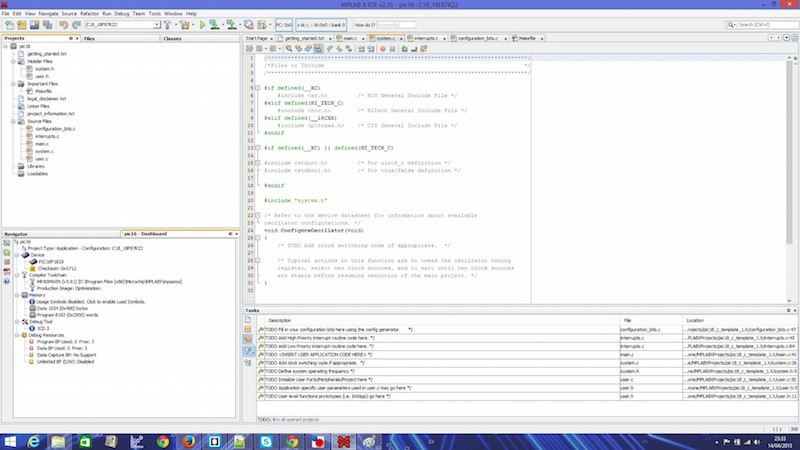
MPLABX homepage
Another IDE is developed by MikroElektronika and is downloadable for free in the base version who give a basic optimization and a limited size in programming memory.
It have a nice user interface and a nice console, and it will include a large variety of library( the program will only unlock the library usable on the pic you choose to use, evaluating the internal module).
It also have a nice user friendly section to set the fuses of the micro and set the register who set the function of the micro.
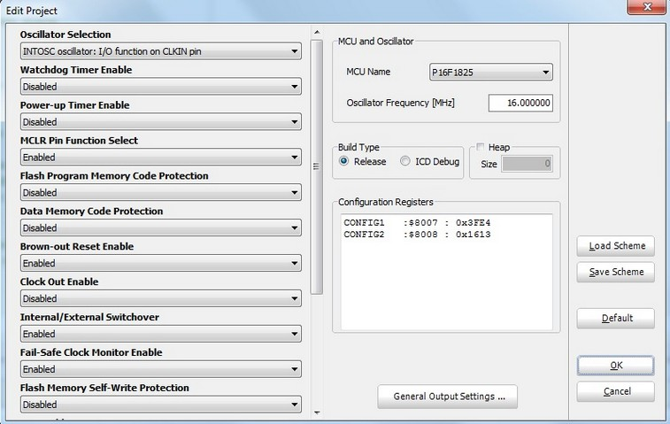
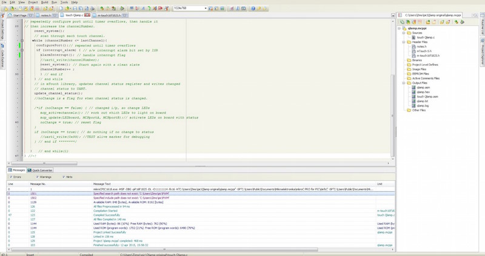
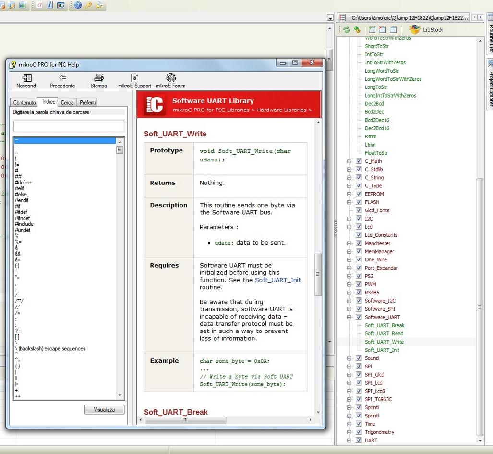
MikroElettronika homepage
All the two IDE have a direct section to upload the code in the micro via different tool (all the microchip programmer for the MPLABX and the MikroElektronika's programmer for that IDE), and all the two make a file HEX as output.
I decide to use the pickit2 (clone) to upload the HEX file in the PicMicro. It can be also replied because the microchip released the schematic and the firmware they put in the original one (made whit a PicMicro).
microchip give free for the use a program to use the pickit2 as programmer and debugger.
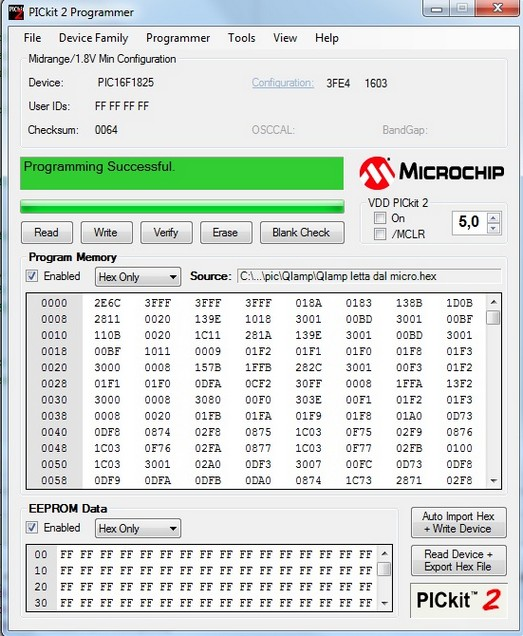
The microchip programming technique is a bit different from the Atmel, it have a only line of data and a line of clock, the other 3 lines are ground, voltage (that can be modulated directly from the pickit2 program, so is possible to test the 5 volt micro and also the low voltage 3.3v and 1.8v), and the programming voltage.
The programming voltage is applied at the reset pin of the micro and if it go to 12-13v put the micro in the programming mode, so all the data that arrive on the two line clock and data will be flushed on the internal memory and register of the micro in serial mode.
HERE you can find some useful information about programming technique
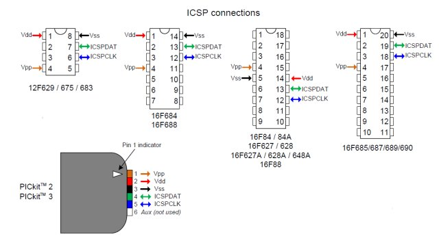
A lot of things can be told about this devices but is not the mission of this week assignment, but I will soon build a programmer for the Pic family and make some researching in open software IDE.
for selecting the proper device you can see what you need and search in the long list of embedded peripheral in the PicMicro family.
I decide to implement a Capacitive Touch, so I search a PicMicro in the list whit a CPS module so i choose the PIC16F1825.
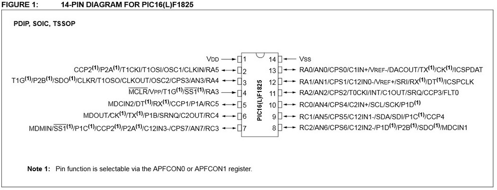
The CPS module is Capacitive Sensing Module ( also called CSM) and reportet from the PIC datasheet is "The Capacitive Sensing (CPS) module allows for an interaction with an end user without a mechanical interface. In a typical application, the CPS module is
attached to a pad on a Printed Circuit Board (PCB),
which is electrically isolated from the end user. When the
end user places their finger over the PCB pad, a
capacitive load is added, causing a frequency shift in the
CPS module. The CPS module requires software and at
least one timer resource to determine the change in
frequency."
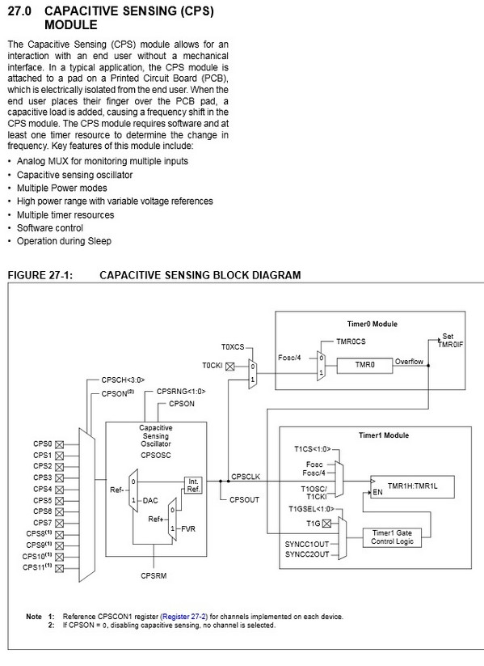
So is based on the fact that the human body have a little capacitance and by using it ( via touch, using the skin as a dielectric), is possible to make an influence in the frequency of an oscillator RC (resistor capacitor).
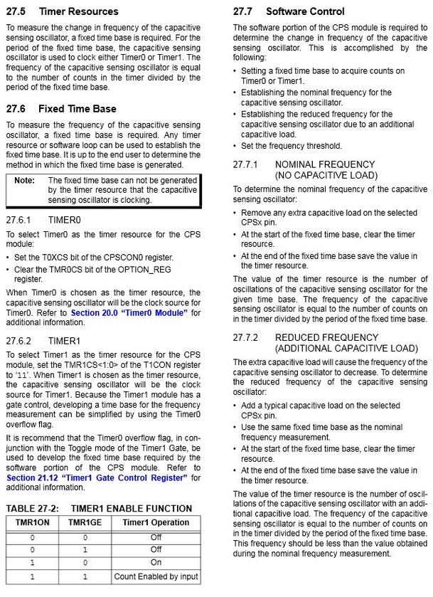
I read the data sheet and the application note from microchip and I start coding...

I follow the indication and make my own c program activating and the activating all the module i need.
HERE you can find the datasheet of the PIC16F1825
The module can connect a lot of input (pin of the micro) to an oscillator circuit and add the capacity that can be put on the pin by a human touch to the total capacity of the integrated circuit, in this way the generator will change the operational frequency he put in output.
So the way is use a time fix unit and count the oscillation the circuit do in this period, so we can detect if a touch happen.
This way need to use 2 different timer. Is also possible to switch easily to a different pin and remake the procedure.
The time needed to make a efficient detection is based on the speed of the oscillator and the precision of the module, so it can be a slow process (in therm of real time process).
Download the ZIP file of the c project and HEX
after the compile goes right i charge the hex in the pickit2 program and flash it....
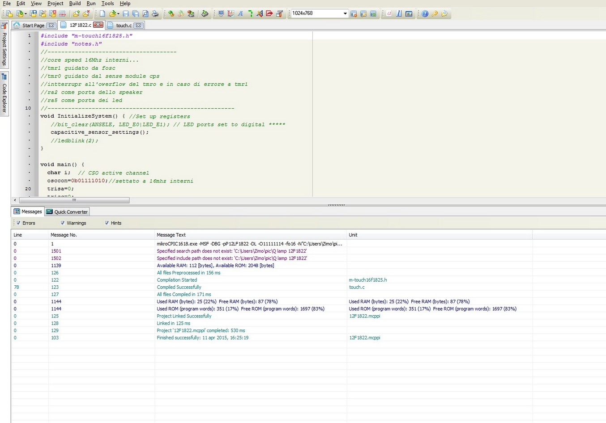
in the picture you can see PIC12f1822 because i olso try a similar code in that (it have the same pheripheral bit less pin)
Here is the program i write (i leave all the comment for a good understanding of what i made)
main
#include "touchpic.h"
//--------------------------------------
//core speed 16Mhz interni...
//tmr1 drived by fosc
//tmr0 drived by sense module cps
//intterrupr at owerflow of tmro e in case of error from tmr1
//ra5 led port
//-------------------------------------------------------
void InitializeSystem() { //Set up registers
//bit_clear(ANSELE, LED_E0|LED_E1); // LED ports set to digital *****
capacitive_sensor_settings();
//ledblink(2);
}
void main() {
char i; // CSO active channel
osccon=0b01111010;// 16mhz internal clock fuses
trisa=0;
trisc=0;
//lata=0;
ansela=0;
ansela.B4=1;
Sound_Init(&PORTa, 2);
InitializeSystem();
disable_interrupts(); // The delay_ms will cause timer IF
delay_ms(300);
//ledblink(2);
reset_system();
timer_presets();
initial_scan_channels(); // set 'off' CSO count for each channel
while(1) {
//ledblink(2);
i =0;
// repeatedly configure port until timer overflows, then handle it
// then increase the channelNumber.
reset_system();
// scan through each touch channel.
while (i <= 0){
configurePort();// repeated until timer overflows
if (interrupt_alarm) { // s/w interrupt alarm bit set by ISR
alarmInterrupt(); // handle interrupt flag
//uart1_write(channelNumber);
reset_system(); // Start again with a clean slate
i++ ;
} // end if
} // end while
disable_interrupts();
// in mTouch library, updates channel status register and writes changed
// channel status to UART.
update_channel_status();
//noChange is a flag for when channel status is changed.
/*if (noChange == false) { // changed i/p, so change LEDs
mcp_activechannels(); // work out which LEDs to light on board
mcp_update(LEDboard, MCPportA, MCPportB);// activate LEDs on board with status
noChange = true; // reset flag
}
if (noChange == true){ // do nothing if no change to status
//uart1_write(0x99); //TEST alive marker for debugging
} // end if ********/
} // end while(1)
}
touch routine i wrote
/* library for mTouch touch
For the PIC16F****,max of 16 channel capacitive touch
"just sends button status and not the CSO count for each channel"
*/
#ifndef _MTOUCH_5_H__
#define _MTOUCH_5_H__
#include "notes.h"
#define bit(num) (1 << num) // creates a bit mask
#define bit_set(v, m) ((v) |=(m)) // Sets the bit
// e.g. bit_set (PORTD, bit(0) | bit(1));
#define bit_clear(v, m) ((v) &= ~(m)) // Clears the bit
#define bit_toggle(v, m) ((v) ^= (m)) // toggle the bit
#define bit_read(v, m) ((v) & (m)) // read a bit and see if it is set
#define bit_test(v,m) ((v) && (m))
#define true 1
#define false 0
#define LED_E0 bit(0)
#define LED_E1 bit(1)
#define LED_E0_on() bit_clear(PORTE,LED_E0)
#define LED_E0_off() bit_set(PORTE,LED_E0)
#define LED_E1_on() bit_clear(PORTE,LED_E1)
#define LED_E1_off() bit_set(PORTE,LED_E1)
//#define t0Interrupt bit(0)
//#define t1Interrupt bit(1)
#define rcieInterrupt bit(2)
#define startChannel 3// h/w error on ch0 on '726 board
#define lastChannel 3 //***** ho modificato il numero di canali
#define numberChannels lastChannel-startChannel+1
#define PORTACapchannels 0b00110000
#define PORTBCapchannels 0b00111111
#define PORTDCapchannles
#define threshold 0x04 // threshold to trigger change on a CSO channel
#define timer1Off() (T1CON.TMR1ON = 0)
//------------------------------------------------------------------------------------------------------------
// TRIS values for all of the CPS pins to turn only the current ChannelNumber CPS and leave all others as ouputs
//------------------------------------------------------------------------------------------------------------
// 0, 1, 2, 3, 4, 5, 6, 7, 8, 9, A, B, C, D, E, F
const char TRISACapOscOn[] = {0b00000000,0b00000000,0b00000000,0b00000000,0b00000000,0b00000000,0b00010000,0b00100000,0b00000000,0b00000000,0b00000000,0b00000000,0b00000000,0b00000000,0b00000000,0b00000000};
const char TRISBCapOscOn[] = {0b00000001,0b00000010,0b00000100,0b00001000,0b00010000,0b00100000,0b00000000,0b00000000,0b00000000,0b00000000,0b00000000,0b00000000,0b00000000,0b00000000,0b00000000,0b00000000};
const char TRISDCapOscOn[] = {0b00000000,0b00000000,0b00000000,0b00000000,0b00000000,0b00000000,0b00000000,0b00000000,0b00000001,0b00000010,0b00000100,0b00001000,0b00010000,0b00100000,0b01000000,0b10000000};
int activeChannels = 0x0000; // initialise to all off, 16 bits for 16 channels!
int initialTriggerCount; // Counter keeps track of how many samples we have taken since the last integration of the released average
int initialCapCount; // Counter keeps track of how many samples we have taken since the last integration of the released average
int capCount; // Store MSB of timer1 for each channel
int oldcapCount[numberChannels]; // Store old capCount
char noChange = true; // flag for changed sensor status
char interrupt_alarm = 0x00; // s/w alarm register, bit(0)=tmr0 IF, bit(1)=tmr1 IF, bit(2) = rcie IF
char t0_preload = 0x06; // preset = 0
char t0Interrupt =0;
char t1Interrupt =0;
char ison=0;
//char touch=0;
//-------------------------------------------------------------------------------------
//*******************************aggiunto da NOTES.H**********************************
//-------------------------------------------------------------------------------------
int pauseBetweenNotes;
int noteduration;
int typesound=0;
//int threshold = 150;
//unsigned int pressCount = 0;
int thisnote;
int coin_sound_num_notes = 2;
int coin_sound_notes[] = {NOTE_D6 , NOTE_G6};
int coin_sound_note_durations[] = {16, 2};
int oneup_sound_num_notes = 6;
int oneup_sound_notes[] = {NOTE_E6, NOTE_G6, NOTE_E7, NOTE_C7, NOTE_D7, NOTE_G7};
int oneup_sound_note_durations[] = {8, 8, 8, 8, 8, 8};
/*
CapSense cs_4_2 = CapSense(CAP_SENSOR_SEND_PIN, CAP_SENSOR_RECEIVE_PIN);
*/
/*
void setup() {
pinMode(10, INPUT);
pinMode(LIGHT_PIN, OUTPUT);
digitalWrite(LIGHT_PIN, HIGH);
delay(1000);
digitalWrite(LIGHT_PIN, LOW);
// tone(SPEAKER_PIN, NOTE_G7);
}
*/
void playSound(int num_notes, int notes[], int durations[]) {
// iterate over the notes of the melody:
for ( thisNote = 0; thisNote < num_notes; thisNote++) {
// to calculate the note duration, take one second
// divided by the note type.
//e.g. quarter note = 1000 / 4, eighth note = 1000/8, etc.
noteDuration = 1000/durations[thisNote];
Sound_Play(notes[thisNote], noteDuration);
// to distinguish the notes, set a minimum time between them.
// the note's duration + 30% seems to work well:
pauseBetweenNotes = noteDuration * 0.30;
Vdelay_ms(pauseBetweenNotes);
// stop the tone playing:
//noTone(speaker_pin);
}
}
//-------------------------------------------------------------------------------------------
//-------------------------------------------------------------------------------------------
//-------------------------------------------------------------------------------------------
/*
// Port expander module connections
sbit SPExpanderRST at RC0_bit;
sbit SPExpanderCS at RC1_bit;
sbit SPExpanderRST_Direction at TRISC0_bit;
sbit SPExpanderCS_Direction at TRISC1_bit;
// End port expander module connections
*/
/* void fast_flash_E0(void) { // flash LED E0
bit_clear(TRISE, LED_E0);
LED_E0_off();
Delay_ms(200);
LED_E0_on();
Delay_ms(300);
LED_E0_off();
}
void fast_flash_E1(void) { // flash LED E1
bit_clear(TRISE, LED_E1);
LED_E1_off();
Delay_ms(200);
LED_E1_on();
Delay_ms(300);
LED_E1_off();
}
*/
void ledblink(int num){
int a;
for (a=0;a defines active pin
//UART_out("tmr1 IF\n");
//delay_ms(300);
//UART_out(t1InterruptTxt);
//uart_out("\n"); // new line
//delay_ms(500);
flag_clear;
//bit_clear(interrupt_alarm,t1Interrupt); // clear alarm flag for tmr1 interrupt
}// end if
/*
if bit_read(interrupt_alarm, rcieInterrupt) { // uart rx flag]
char rcieInterruptTxt[7];
// disable_interrupts();
IntToStr(RCREG, rcieInterruptTxt); //uart rx text
//UART_out("rcie IF\n");
//uart_out(rcieInterruptTxt); // write back received text
//uart_out("\n"); // new line
if (RCREG == 4) {
uartTrigger();
} // end if
bit_clear(interrupt_alarm,rcieInterrupt); // clear alarm flag
} // end if
*/
} // end alarmInterrupt
/*
void uart_write_short(short var) {
uart1_write(var);
}
*/
// Configure tris & CPSCON1 settings for channel
void configurePort() {
CPSCON1.CPSCH0= 1; // Set CSO to active channel
CPSCON1.CPSCH1= 1; // Set CSO to active channel
//ansela.B4=1;
trisa.B4=1;
//uart_write_short(CPSCON1); // debug info
/* if (channel < 6) {
TRISB = TRISBCapOscOn[channel]; // Channels 0-5 on portB
}
else if (channel < 8){
TRISA = TRISACapOscOn[channel]; // Channels 6-7 on portA
}
else {
TRISD = TRISDCapOscOn[channel]; // Channels 8-15 on portD
}
*/
}
/*
void scan_channels(){ // get CSO count for each channel
char channel=0;
while (channel <= 0){
configurePort();// repeated until timer overflows
if (interrupt_alarm) { // s/w interrupt alarm bit set by ISR
alarmInterrupt(); // handle interrupt flag
reset_system(); // Start again with a clean slate
channel++ ;
} // end if
} // end while
}// end scan_channels
*/
void initial_scan_channels(){ // set initial CSO count threshold for each channel
//char channel = 0;
char find=0;
//while (channel <= 0){
while (find<=0) {
if (interrupt_alarm) { // s/w interrupt alarm bit set by ISR
alarmInterrupt(); // handle interrupt flag
initialTriggerCount = capCount+threshold;
initialCapCount = capCount+(threshold-1);
reset_system(); // Start again with a clean slate
//channel++ ;
find++;
} // end if
} // end while
}// end scan_channels
/********************
// error - tmr1 overflowed before tmr0
void tmr1_overflow_debug(short var){
char errorTxt[7];
disable_interrupts();
uart_out("Timer1 IF");
delay_ms(500);
IntToStr(var, errorTxt);
uart_out(errorTxt);
delay_ms(500);
} // end tmr1_overflow_debug
*/
/*void debug(int var) { // writes debug info to LCD
char debugText[7];
disable_interrupts();
IntToStr(var, debugText);
// SPI_LCD_write(1,1,"debug text");
uart_out("debug text");
delay_ms(500);
// SPI_LCD_write(2,1,debugText);
uart_out(debugText);
delay_ms(500);
} // end debug
*/
/*
// send info of a channel turning ON to uart
void uart_channel_on(char channel) {
// set bit 6 high to avoid any 0x00 being sent as data
bit_set(channel, bit(6));
// set bit 5 high to indicate channel turned ON
bit_set(channel, bit(5));
uart1_write(channel);
//uart1_write(0xAA); // for testing
} // end uart_channel_on
void uart_channel_off(char channel) {
// set bit 6 high to avoid any 0x00 being sent as data
bit_set(channel, bit(6));
// set bit 5 low to indicate channel turned OFF, should be anyway
bit_clear(channel, bit(5));
uart1_write(channel);
//uart1_write(0xEE); // testing
} // end uart_channel_off
*/
// update activeChannels register with on/off info
// send changed channels to uart
int update_channel_status(int touch) { // update activeChannels with on/off info
//unsigned int tempactiveChannels; // used for debugging
char channel = 0; // channel counter
//portc=capcount;
while(channel <= 0) // scroll through each channel
{
// channel CSO count increased - channel turned ON
if (capCount > initialTriggerCount){/* &&
!bit_read(activeChannels, bit(channel))******/
//portc=capcount;
//noChange = false; // there's been a change
//bit_set(activeChannels, bit(channel)); // flag this channel as on
//disable_interrupts();
//ledblink(2);
//porta.b5=1;
if (!(touch==1)){
touch=1;
if(ison==0){
ison=1;
porta.b5=1;
}//endif
}//endif
else {
ison=0;
porta.b5=0;
}//endelse
} // end if
}
// channel CSO count decreased - channel turned OFF
if ((capCount < initialcapCount)&(touch==1)&(!(capcount>initialTriggerCount))){/* && bit_read(activeChannels, bit(channel))*****/
//noChange = false; // there's been a change
//bit_clear(activeChannels, bit(channel)); // flag this channel as off
//portc=capcount;
//disable_interrupts();
touch=0;
//porta.b5=0;
//ledblink(1);
// uart changed channel
//uart_channel_off(channel); // send channel off status to uart ***
} // end if
//UART1_Write(capCount);
capCount=0;
channel++;
//delay_ms(250);
} // end while
/* for debugging, writes out the activated channels
if (noChange == false) { // for debugging, write both bytes of activeChannels to UART
tempactiveChannels = activeChannels;
uart1_write(tempactiveChannels);// write 8 LSB
tempactiveChannels = tempactiveChannels >> 8; // shift MSB to LSB location
uart1_write(tempactiveChannels); // write 8 MSB
} // end if
*/
return(touch);
} // end update_channel_status
#endif
test and work...
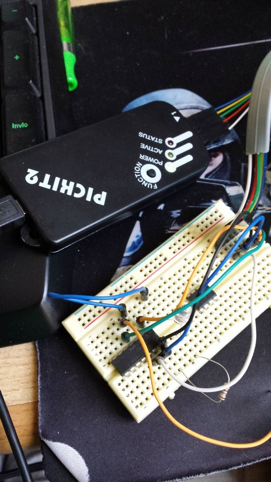
What i read whit this sensor?
The sensor that i made is a proximity sensor who detect the near of a human (or animal) body (or a piece of the body like hands finger) and take an action at a give threshold.
The threshold is given via software ( and in my script is setted at the start so if you turn on the circuit you can decide the distance of activation by holding the hand at the distance you want the activation occur).
In this case the effect taken at the activation is to toggle the led.
other thing will be made...